22ETNA 26 vitrin/banko
9BLADE 12 genel
1.553 Wkurulu güç
31.500 lxvitrin ortalama
5devre
360° gezinti
Sürükleyin, telefonda döndürün; noktalar arasında geçiş yapın.
Görseller
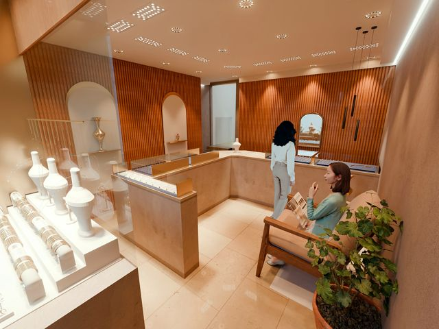
Girişten genel görünüm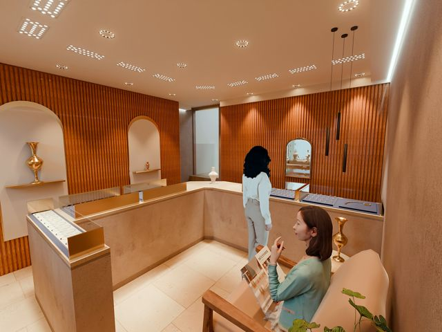
Müşteri alanı ve banko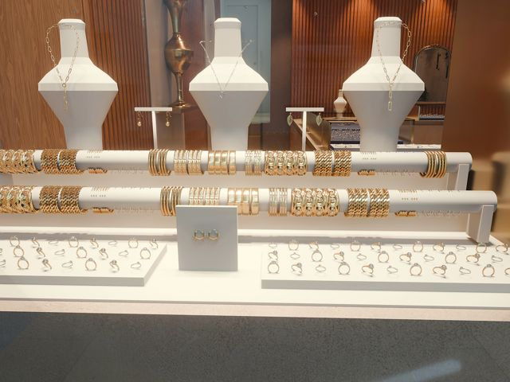
Bilezik vitrini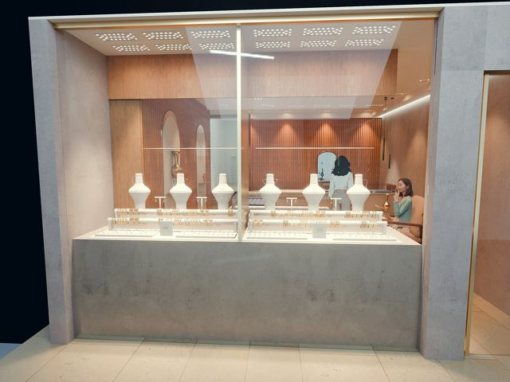
Sokaktan vitrin · akşam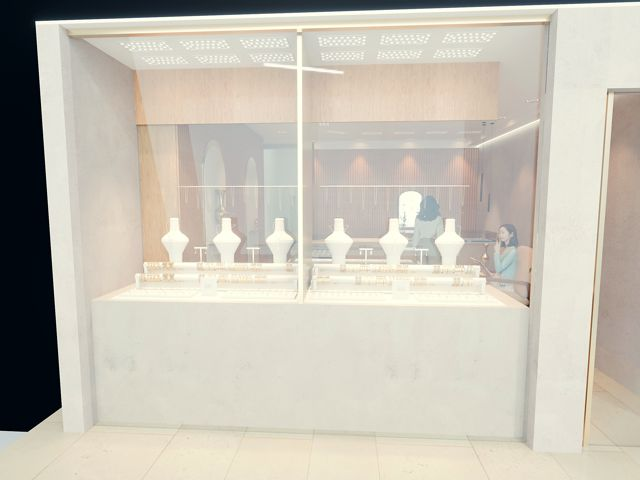
Sokaktan vitrin · gündüz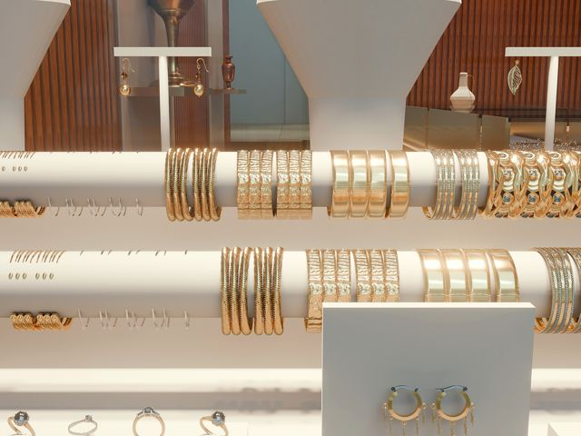
Yakın plan · pırıltı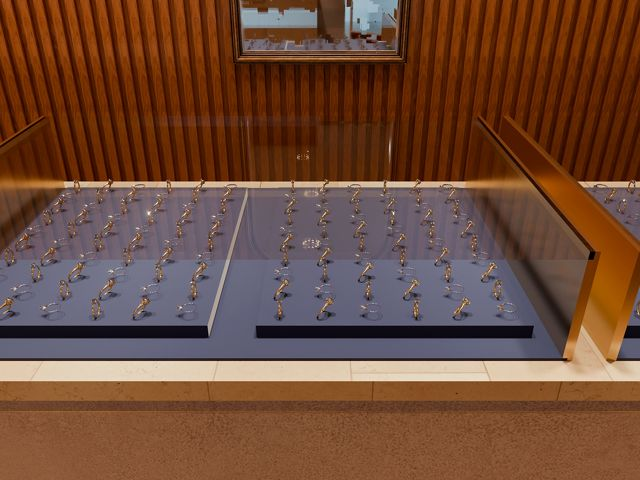
Banko vitrini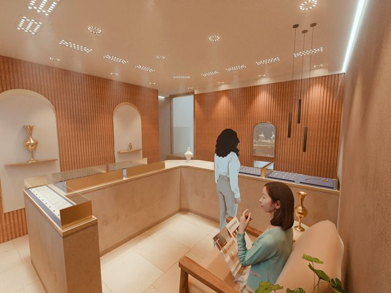
Işık konileri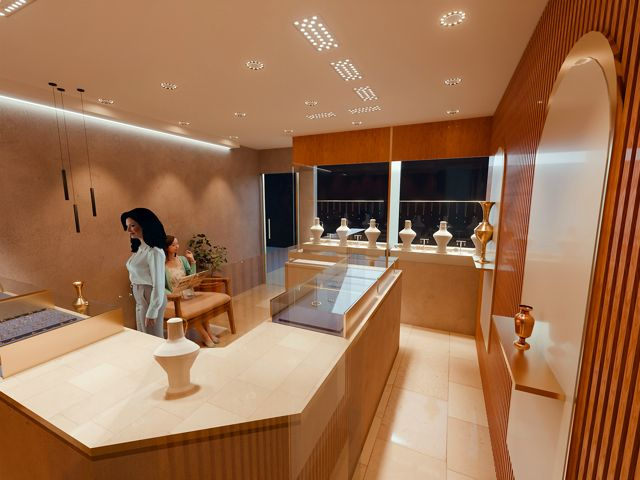
Personel tarafı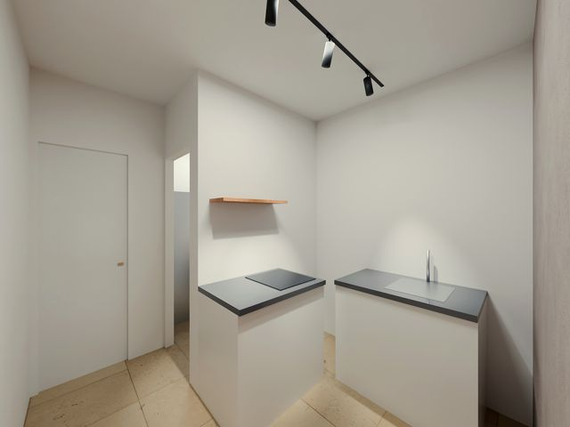
Arka bölüm · mutfak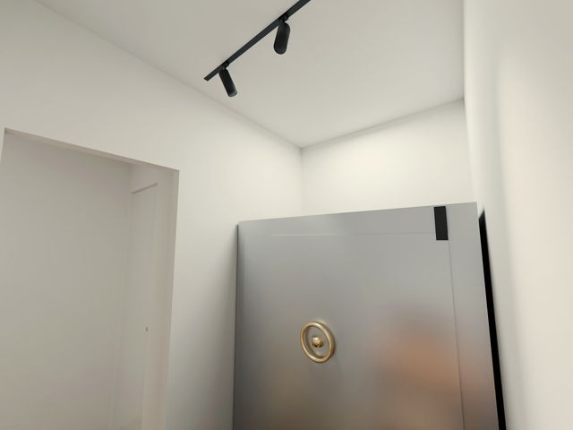
Ofis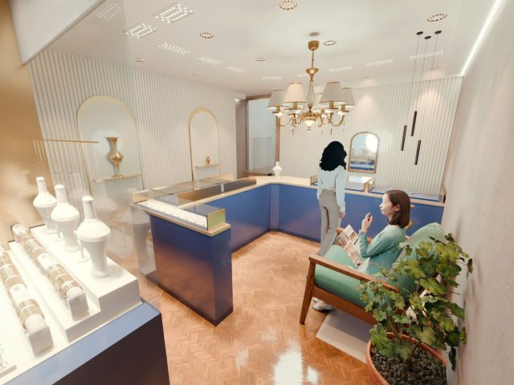
Seçenek · Paris Vendôme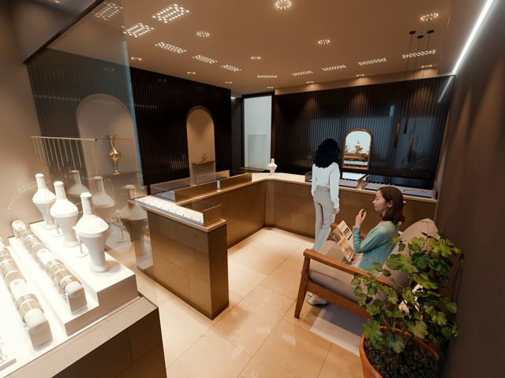
Seçenek · Monokrom Gri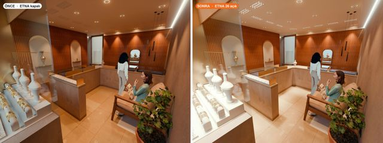
Önce / sonra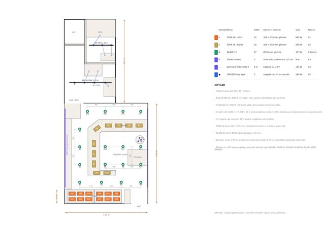
Tavan planı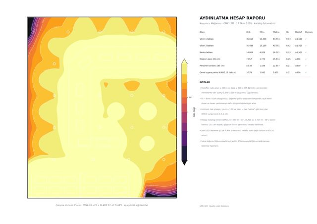
Aydınlık haritası